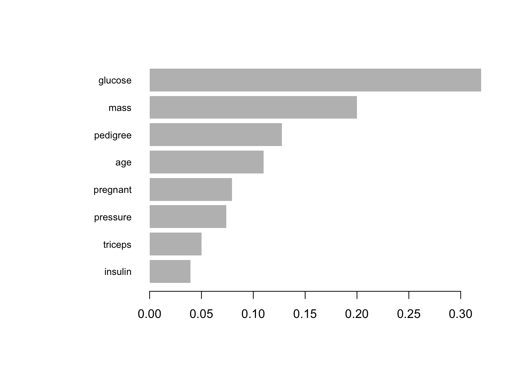

## Importar a biblioteca necessária
## Como se estivéssemos pegando a caixa de ferramentas certa para o nosso trabalho.
library(xgboost)
## Carregar os dados
## É como obter os ingredientes para a nossa receita.
data(PimaIndiansDiabetes, package="mlbench")
## Processar os dados: binarizar a coluna diabetes
## Estamos preparando os ingredientes, mudando "pos" para 1 e "neg" para 0.
PimaIndiansDiabetes$diabetes_bin <- ifelse(PimaIndiansDiabetes$diabetes == "pos", 1, 0)
## Remover a coluna original "diabetes"
## Não precisamos mais dela, pois já temos a versão binária.
PimaIndiansDiabetes$diabetes <- NULL
## Dividir os dados em conjunto de treinamento e de teste
## Isso nos permite testar o quão bom é o nosso modelo mais tarde.
set.seed(42)
indices <- sample(1:nrow(PimaIndiansDiabetes), size = 0.8*nrow(PimaIndiansDiabetes))
trainData <- PimaIndiansDiabetes[indices, ]
testData <- PimaIndiansDiabetes[-indices, ]
## Converter os dados para o formato xgb.DMatrix
## Este é o formato que o XGBoost gosta de usar. É como picar os legumes antes de cozinhá-los.
dtrain <- xgb.DMatrix(data = as.matrix(trainData[, -9]), label = trainData$diabetes_bin)
dtest <- xgb.DMatrix(data = as.matrix(testData[, -9]), label = testData$diabetes_bin)
## Definir parâmetros
## Essas são as instruções sobre como o XGBoost deve aprender a partir dos nossos dados.
params <-
list(
booster = "gbtree",
objective = "binary:logistic",
eta = 0.3,
gamma = 0,
max_depth = 6,
min_child_weight = 1,
subsample = 1,
colsample_bytree = 1
)
## Treinar o modelo
## O XGBoost está agora aprendendo a partir dos nossos dados.
xgb_model <- xgb.train(params = params, data = dtrain, nrounds = 50)
## Prever no conjunto de teste
## Vamos ver o quão bem o nosso modelo aprendeu.
preds <- predict(xgb_model, dtest)
## Converter previsões para classes
## Isso nos dá uma previsão clara de "sim" ou "não" para cada exemplo no conjunto de teste.
preds_class <- ifelse(preds > 0.5, 1, 0)
## Calcular a acurácia
## Isso nos diz quantas vezes o nosso modelo acertou.
accuracy <- sum(preds_class == testData$diabetes_bin) / nrow(testData)
print(paste("A acurácia do modelo é", accuracy))[1] "A acurácia do modelo é 0.753246753246753"## Plotar a importância das variáveis
## Isso nos mostra quais partes dos nossos dados o modelo achou mais útil para aprender.
xgb.plot.importance(xgb.importance(model = xgb_model))